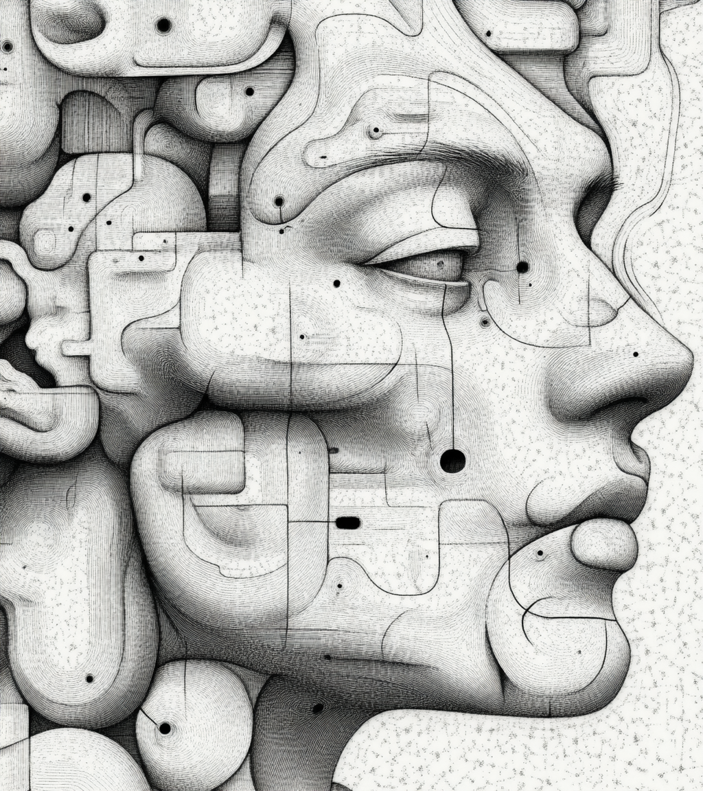

| Generative AI for Education |
 |
 “how to make machines use language, form abstractions and concepts, solve kinds of problems now reserved for humans, and improve themselves” (McCarthy et al., 1955) |
| Human AI ***** Donna Haraway (2106) Staying with the Trouble ****** Ethan Mollick (2024) Co-intelligence |
 |
| Qwen2.5-Max, “tabula rasa, b&w”, 16:9 |

 AI as IT? Or something else?
AI as IT? Or something else?| Yahoo Finance, 2025 |
 Fourth Figure. Ars brevis XVIII Century. Palma de Mallorca BP
MS998. Digital version Biblioteca Virtual del Patrimonio Bibliográfico.
Spain. Ministerio de Educación, Cultura y Deporte.
Fourth Figure. Ars brevis XVIII Century. Palma de Mallorca BP
MS998. Digital version Biblioteca Virtual del Patrimonio Bibliográfico.
Spain. Ministerio de Educación, Cultura y Deporte. 
| Proto-Computing in the 8th –13th **
Centuries** Al-Khwarizmi - Esposito, John L. , ed. (1999) The Oxford History of Islam, Oxford University Press ISBN: 0195107993. ; April 2006 |
 Side-note for the historically minded… Truitt, E. R. (2015).
Medieval robots: Mechanism, magic, nature, and art. University
of Pennsylvania Press.
Side-note for the historically minded… Truitt, E. R. (2015).
Medieval robots: Mechanism, magic, nature, and art. University
of Pennsylvania Press.


| 17th/18th** Century – final days of feudalism – computation as *****rational (human) 18th/19th Century – first days of industrial capitalism – computation as ****mechanical (machine)*** |
 “The hand-mill gives you society with the feudal lord;
“The hand-mill gives you society with the feudal lord;
 the steam-mill society with the industrial
capitalist.” (Marx, 1847)
the steam-mill society with the industrial
capitalist.” (Marx, 1847)| What fundamentals makes for AI / Machine Learning /
Deep Learning / Neural network? Calculus (17th century – Leibniz, Newton) Probability [think “stochastic parrots”] (18th/19th century – Euler, Gauss, Laplanche Fourier) Linear algebra (19th century – James John Sylvester) Markov Models (very early 20th century – Andrej Markov) |
| All the mathematics for AI in 2025 was developed by
the end of the 19th century (with applications, like Markov models, in
1906/1913) Are the last 125 years just hardware, networks & data (see LeCun 2021 - who doesn’t (quite) say this)? Is our sense of modernity just the long shadow cast by the Enlightenment (17th / 18th century)? |